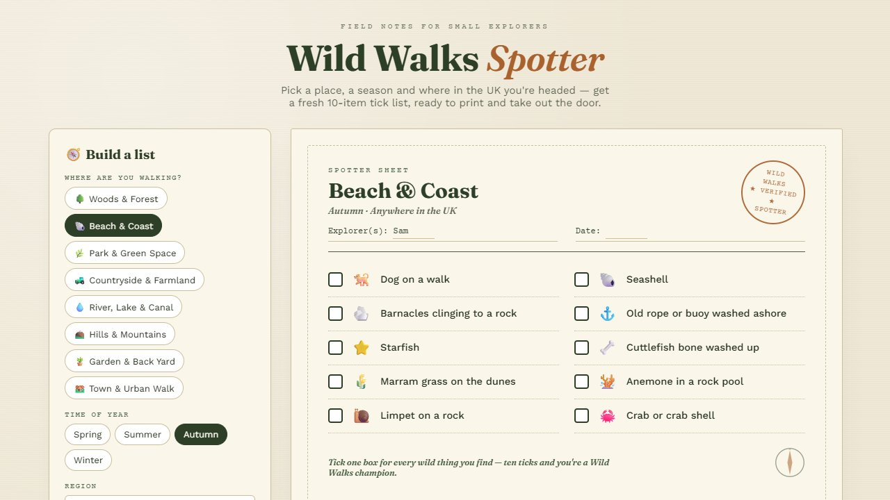
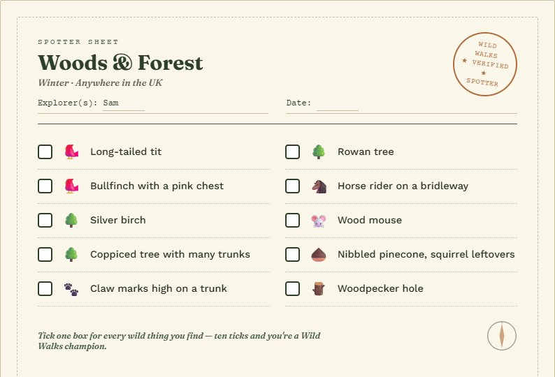
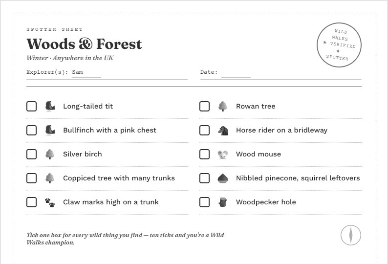

2024-01-10
A small web app that makes printable spotter sheets for nature walks. Pick where you're walking, the time of year and the part of the UK, and it builds a tick list of ten things to look out for. Print it, grab a pencil and head out the door.
Try it here: Wild Walks Spotter

What It Does
You choose from eight kinds of walk: woods and forest, beach and coast, park and green space, countryside and farmland, river, lake and canal, hills and mountains, garden and back yard, or a town and urban walk. Then the season and a region: anywhere in the UK, North or South Wales, North or South England, or Scotland.
The app picks ten things from a pool of about 350 birds, plants, tracks, bugs and other finds, keeping only those that fit the place, the season and the region. Bluebells only turn up in spring, and acorns in autumn. If you don't like the ten it picked, Shuffle these 10 gives you a fresh set.

Printing
The sheet is laid out for an A4 page, with tick boxes, a space for the explorer's name and the date, and a "Wild Walks verified spotter" stamp. Add the kids' names and they're printed on the sheet.
Print / Save as PDF prints just the sheet. If your printer is black and white, tick the grayscale box to check the pictures still make sense before you print.

How It's Built
It's a single HTML page with no server and no build step: the list of sightings, the picking and the print layout are all in one file. It's hosted on GitHub Pages, and the code is on GitHub: Brimbles/wild-walks-spotter.